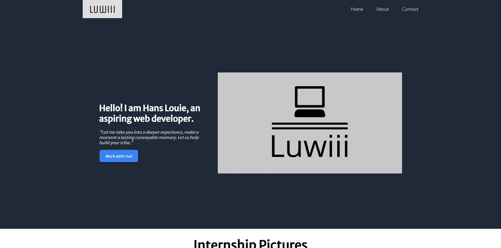

Tech Stack
Languages
Framework(s)
Thesis Project
SciSupport
We developed an AI-powered inquiry chatbot Android application to assist students of the College of Science at Bulacan State University. The front-end is built using React Native, while the back-end uses Node.js, Express, SQLite, and NLP. As a contributor, I was responsible for developing and designing the user interface.
Small Projects
Landing Page
This is my first project in the odin project foundations course, where I created a clean and responsive landing page using HTML and CSS.
Rock Paper Scissors
The rock, paper, scissors project was my first attempt at developing an interactive game on a webpage. I enjoyed creating this game using JavaScript to handle the game logic and user interactions.
Etch-A-Sketch
By creating this project, I was able to test my skills in DOM manipulation by creating a dynamic and resizable grid. Users can adjust the grid dimensions to their preference.
Calculator
This is my last project in the odin project foundations course. I created a calculator that can handle simple arithmetic operators.